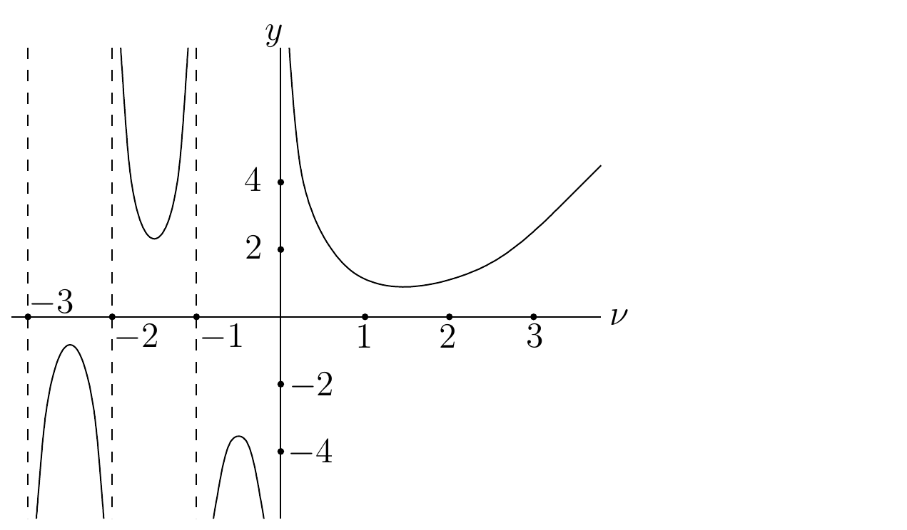

Batas sumber. Bagian ini mengikat
special_functions.tex baris 1063-1431 pada sumber beku.
Polinom Legendre
pada
Rujukan yang baik mengenai topik ini dan topik-topik pada bagian
berikutnya dalam bab ini adalah Rain; Simm.
Secara khusus, pembaca akan menemukan dalam rujukan ini bukti-bukti
untuk hasil yang kami berikan tanpa bukti.
Persamaan diferensial Legendre adalah
(5.3.1)
Dengan menggunakan metode Frobenius di titik reguler
,
kita mendapati bahwa solusi-solusi terbatas (pada interval
)
dari persamaan diferensial ini merupakan kelipatan dari
di mana
adalah bilangan bulat terbesar yang kurang dari atau sama dengan
.
Polinom
disebut polinom Legendre ternormalisasi karena
polinom-polinom tersebut memenuhi syarat normalisasi
.
Selain itu, berlaku
untuk
.
Polinom
dapat dibangkitkan oleh relasi rekurensi
atau oleh rumus Rodrigues yang diberikan
dalam proposisi berikut.
Proposisi.
Bukti. Karena
kita memperoleh
karena turunan berorde
dari
bernilai nol untuk
;
yaitu,
.
Karena
kita memperoleh
Terdapat pula deret pembangkit untuk polinom Legendre; yaitu,
Enam
polinom Legendre pertama adalah
,
,
,
,
dan
.
Persamaan Legendre (5.3.1)
dapat ditulis sebagai masalah Sturm-Liouville singular reguler. Secara
lebih tepat, (5.3.1)
adalah
Ini adalah (5.2.1)
dengan
,
,
,
dan
.
Jika kita mensyaratkan agar
terbatas pada interval
,
maka kita memperoleh masalah Sturm-Liouville singular reguler yang nilai
eigennya adalah
untuk
,
dan di mana polinom Legendre
merupakan fungsi eigen yang terkait dengan nilai eigen
.
Dari teori masalah Sturm-Liouville diperoleh bahwa polinom Legendre
ortogonal terhadap hasil kali skalar
dan himpunan
lengkap dalam
.
Secara lebih tepat, polinom Legendre memenuhi relasi ortogonalitas
Kita juga memiliki hasil
berikut.
Proposisi. Norma
dari
adalah
Bukti. Misalkan
.
Dengan menggunakan rumus Rodrigues, kita memperoleh
Dengan menggunakan integrasi parsial dengan
dan
,
sehingga
dan
,
kita memperoleh
karena
pada
dan
untuk
.
Dengan menggunakan integrasi parsial seperti di atas, pembaca dapat
dengan mudah menunjukkan melalui induksi bahwa
Karena
kita memperoleh
Untuk menghitung integral
,
kita menggunakan substitusi trigonometri
untuk
.
Dengan menggunakan integrasi parsial dengan
dan
,
sehingga
dan
,
kita memperoleh
Dengan demikian,
Mengulangi prosedur ini sebanyak
kali menghasilkan
Akhirnya, kita memperoleh
Ekspansi Fourier-Legendre dari
pada
adalah
(5.3.2) di mana
untuk
.
Deret dalam (5.3.2)
konvergen dalam
.
Dengan substitusi
untuk
,
kita memperoleh himpunan fungsi ortogonal lengkap
dalam ruang berbobot
,
dengan hasil kali skalar yang diberikan oleh
Ekspansi Fourier-Legendre dari
pada
terhadap himpunan fungsi ortogonal lengkap ini adalah
Contoh. Nyatakan fungsi
untuk
dalam polinom Legendre.
Koefisien diberikan oleh
untuk
.
Karena
merupakan fungsi ganjil ketika
ganjil, maka
ganjil ketika
ganjil sehingga
untuk
ganjil. Menemukan rumus umum untuk koefisien
dengan
genap sedikit lebih sulit. Kita memperoleh
dan seterusnya. Jika kita
menggunakan rumus Rodrigues, kita mendapati bahwa
untuk
.
Jika kita mengasumsikan bahwa
,
maka kita dapat menggunakan integrasi parsial dengan
dan
,
sehingga
dan
,
untuk memperoleh
di mana kesamaan kedua dan
ketiga diperoleh dari
untuk
.
Nilai
pada
diberikan oleh
dikalikan koefisien
dalam
Koefisien ini berkaitan dengan
sedemikian sehingga
;
yaitu,
.
Oleh karena itu
untuk
.
Dengan demikian
Polinom
Legendre Terasosiasi
pada
Persamaan Legendre terasosiasi adalah persamaan
diferensial biasa
(5.4.1)
untuk
,
dengan
bilangan bulat taknegatif. Jika kita mendiferensialkan persamaan
Legendre sebanyak
kali terhadap
,
yang diberikan oleh
(5.4.2)
untuk
,
maka kita memperoleh persamaan diferensial
untuk
.
Jika kita menyubstitusikan
,
atau secara ekuivalen
,
ke dalam persamaan sebelumnya dan mengalikannya dengan
,
maka kita memperoleh (5.4.1).
Oleh karena itu, solusi (5.4.1)
berbentuk
,
dengan
merupakan solusi persamaan Legendre (5.4.2).
Dapat ditunjukkan bahwa, untuk setiap bilangan bulat tetap
,
(5.4.1)
mempunyai solusi terbatas taktrivial jika dan hanya jika
untuk suatu bilangan bulat
.
Selain itu, apabila
dan
,
ruang solusi terbatas dari (5.4.1)
direntang oleh polinom Legendre terasosiasi yang didefinisikan
oleh
Perhatikan bahwa
tidak dapat lebih besar daripada
karena
merupakan polinom berderajat
sehingga turunannya yang berorde lebih besar daripada
bernilai nol.
Polinom Legendre terasosiasi akan berguna dalam mempelajari persamaan
Laplace pada Bab 9 (rujukan ke bab mendatang).
Fungsi Gamma
Fungsi gamma diperlukan untuk mendefinisikan fungsi-fungsi Bessel
pada bagian berikutnya. Penggunaan fungsi gamma dalam matematika tidak
terbatas pada definisi fungsi-fungsi Bessel. Bahkan, fungsi gamma muncul
di banyak bidang matematika. Fungsi gamma memainkan peranan penting
dalam analisis matematika, dalam teori bilangan analitik, dan
sebagainya.
Fungsi gamma
didefinisikan oleh
untuk
dan secara rekursif oleh
untuk
,
dengan
bukan bilangan bulat negatif. Graf fungsi gamma antara
dan
ditampilkan pada Gambar 5.1.
Beberapa sifat fungsi gamma adalah
dan
untuk
.

Grafik fungsi gamma y=Gamma(nu) untuk -3
< nu < 3, dengan cabang-cabang yang dipisahkan oleh asimtot pada
bilangan bulat nonpositif.
Perhatikan bahwa
.
Hal ini dapat dengan mudah dibuktikan menggunakan integral ganda. Dengan
substitusi
dalam
kita memperoleh
Jadi,
dengan menggunakan
koordinat polar
,
untuk
dan
guna menghitung integral ganda.
Atribusi dan hak. Karya sumber oleh Benoit Dionne
dilisensikan berdasarkan Creative
Commons Attribution-NonCommercial-ShareAlike 4.0 International.
Terjemahan dan perubahan yang dicatat menggunakan lisensi komponen yang
sama. Produksi terjemahan dan edisi dibantu OpenAI Codex gpt-5.6-sol,
Ultra; semua kredit penulis dan kontributor manusia tetap dipertahankan.
Ini bukan terbitan atau dukungan resmi Benoit Dionne maupun University
of Ottawa.